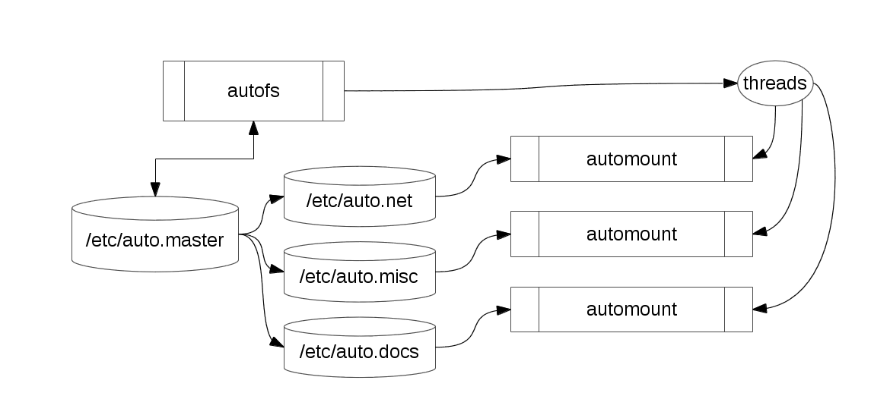

Linux 客户端自动挂载 EOS 文件系统
EOS 是 CERN 开发的 PB 级的文件存储系统。在 Linux 客户端上我们可以通过 Autofs (Automount) 来自动挂载 EOS。
目录
Autofs 介绍与结构
Autofs 介绍
Autofs 或者 Automount 是 Linux 下一个非常友好的自动按需挂载文件系统的软件。在 Linux 下， 我们一般地是用 /etc/fstab 来设定挂载点的，这两种方法都可以挂载文件系统，那它们有什么区别呢？
Autofs 与 /etc/fstab
/tec/fstab 是用来永久挂载文件系统的，在挂载目录很少时会很有用，但是如果挂载目录多了会对整个系统的性能有影响，所以一般只挂载一些必要的目录。
autofs 则是按需挂载文件系统。 默认地，autofs 挂载的文件系统是处于未挂载状态，只有用户尝试去访问挂载点时，它才会自动挂载该文件系统。当用户一定时间不用该文件系统后，其会被自动卸载。
Autofs 结构
下图展示了 Autofs 的结构：

/etc/autofs.conf是 autofs 的配置文件/etc/auto.master是 autofs 的主要挂载点配置文件/etc/autofs_ldap_auth.conf是LDAP认证文件/etc/auto.misc则是 Linux 设备的挂载模板
安装配置 Autofs
安装 Autofs
### CentOS/Fedora
$ sudo yum install -y autofs
### Debian/Ubuntu
$ sudo apt install -y autofs
配置 /etc/auto.master
/etc/auto.master 中记录了自动挂载的目录和配置文件，我们要挂载 EOS， 就在里面添加一项：
/eos /etc/auto.eos --timeout=10
其中，
/eos是自动挂载点，我们将 EOS 文件系统挂载到/eos目录/etc/auto.eos是挂载配置文件，指定了文件系统类型等等--timeout是超时设置，如果超过指定时间如10s没有使用 该文件系统，它就会被自动卸载
创建 /etc/auto.eos
/etc/auto.eos 是我们自己创建的， 配置文件格式一般如下：
[host]:
下面是 EOS 文件系统的配置：
dev --fstype=eos :dev
对于 NFS 等系统，这时就可以通过启动或重启 autofs 服务来挂载共享目录了，但是对于 EOS， 我们还要做额外的工作。
客户端挂载 EOS
安装 EOS-client
客户端要挂载 EOS， 必须要安装 EOS-client:
$ sudo yum install -y eos-client eos-fuse eos-fusex eos-fuse-core eos-fusex-core
配置 /etc/sysconfig/eos.dev
挂载 EOS 的配置文件大致如下：
export EOS_FUSE_CACHE=1
export EOS_FUSE_CACHE_PAGE_SIZE=32768
export EOS_FUSE_CACHE_SIZE=268435456
export EOS_FUSE_KERNELCACHE=1
export EOS_FUSE_DEBUG=0
export EOS_FUSE_LOGLEVEL=4
export EOS_FUSE_MGM_ALIAS=YOUR_MGM_HOST
export EOS_FUSE_MOUNTDIR=/eos
export EOS_FUSE_REMOTEDIR=/eos/user/a/amito
export EOS_FUSE_NEG_ENTRY_CACHE_TIME=1.0e-09
export EOS_FUSE_ATTR_CACHE_TIME=0.0000000000000001
export EOS_FUSE_ENTRY_CACHE_TIME=0.0000000000000001
export EOS_FUSE_SYNC=1
export EOS_FUSE_NOPIO=1
export EOS_FUSE_PIDMAP=1
export EOS_FUSE_RDAHEAD=1
export EOS_FUSE_RDAHEAD_WINDOW=262144
export EOS_FUSE_RMLVL_PROTECT=2
export EOS_FUSE_SHOW_SPECIAL_FILES=0
export EOS_FUSE_USER_KRB5CC=0
export EOS_LOG_SYSLOG=0
export XRD_APPNAME=eos-fuse
export XRD_CONNECTIONRETRY=4096
export XRD_CONNECTIONWINDOW=10
export XRD_DATASERVERTTL=300
export XRD_LOADBALANCERTTL=1800
export XRD_LOGLEVEL=Info
export XRD_REDIRECTLIMIT=5
export XRD_REQUESTTIMEOUT=60
export XRD_STREAMERRORWINDOW=60
export XRD_STREAMTIMEOUT=60
export XRD_TIMEOUTRESOLUTION=1
export XRD_WORKERTHREADS=16
export EOS_FUSE_XATTR_ENOSYS=system.posix_acl_access
test -e /usr/lib64/libjemalloc.so.1 && export LD_PRELOAD=/usr/lib64/libjemalloc.so.1
其中需要修改的是
- EOS_FUSE_MGM_ALIAS: EOS 的 MGM 节点主机名
- EOS_FUSE_MOUNTDIR: 挂载到本机的目录
- EOS_FUSE_REMOTEDIR：需要挂载的目录
挂载 EOS
配置完成后，我们就可以挂载 EOS 文件系统了：
$ sudo systemctl enable --now autofs.service
$ sudo systemctl restart autofs.service